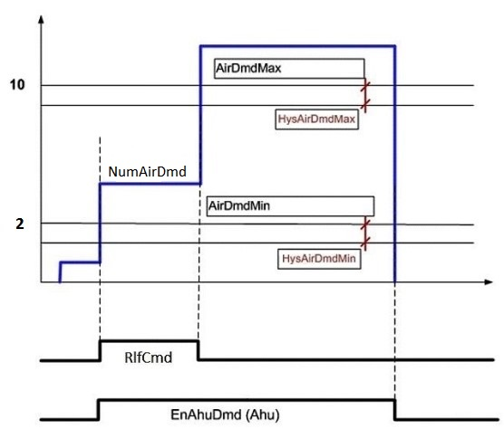

供应链救济功能（SplyRlfFnct11）
Overview
应用功能》Supply chain relief function 11" (SplyRlfFnct11) 计算 AHU 的需求，以确保其足以确保初级 AHU 的运行稳定性（静压控制）。如果需求太低，释放命令 (RlfCmd) 将分发到段中的 VAV 控制器，这些控制器通过增加气流设定值来做出响应。
Function
如果中央气流的总体需求（空气需求数量，NumAirDmd）太低，则释放命令（RlfCmd）设置为 1:On 并通过分组分配到段的 VAVs，以在中央 AHU 处引起更多的风量流量。
在下图中，AHU 在两个要求的最低级别启动，并且救济 (RlfCmd) 设置为“打开”并将保持打开状态，直到超过 /unless 10 个要求。

AirDmdMax | 最大空气需求工厂模式，请参阅配置 |
HysAirDmdMax | 最大空气需求工厂模式的滞后，请参阅配置 |
AirDmdMin | 最小空气需求工厂模式。该参数包含在 SplyAir11 中。可配置的空气需求量低端范围。如果存在的空气需求数量在 AirDmdMin 和 AirDmdMax 之间，则将释放命令 (RlfCmd) 分发到各段。 |
HysAirDmdMin | 最小空气需求工厂模式的滞后。该参数包含在 SplyAir11 中。 |
NumAirDmd | 需求数量。该对象包含在 SplyAir11 中。当前活动空气需求数量的计算值。 |
RlfCmd | 救援指挥 |
EnAhuDmd | AHU 处的空气需求启用点示例 |
Configuration
 Parameters
Parameters
描述 | 范围 | 默认值 |
|---|---|---|
Number of maximum air demand plant mode 1...50 | AirDmdMax | 10 |
Hysteresis for number of maximum air demand plant mode 1...5 | HysAirDmdMax | 2 |
Interface
界面 | 描述 | 类型 | 参考号 | 拥有者 |
|---|---|---|---|---|
RlfCmd | Relief command 0:Off | BPrcVal | ● | - |
SplyAirMst | Manager for supply chain air | GrpMaster | ◉ | SplyAir11 |
Engineering and commissioning
定义激活主 AHU 所需的最小空气需求量。